boxplot(HousesNY$Price)
There are three places I visit constantly:
For plots, we have many choices. We can use what is built into R, or.. use the ggplot system where you add on layers to your plot using the + symbol, or use specialist packages such as ggstatplot or beeswarm.
If you are new to data visualisation, read these two articles
Plots are designed to do two things, allow you to see something in the data that you couldn’t see in the numbers, plus communicate output in a compelling way. Going beyond the basics or knowing the limitations of a plot will help you do this, so in these examples I have provided a range of complexity.
So far, I have focused on plots that slow you to visualise the distribution of your response variable. You do not need to use them all! Choose ones that work for you and your data.
Boxplots have been around over 40 years! See their history and evolution here: http://vita.had.co.nz/papers/boxplots.pdf
In terms of your reports, you need to think of 3 things: - Why you are making the plot (quick look vs publication worthy final graphic) - What aspects of the data do you want to highlight (lots of data, comparing groups, weird distributions..) - What are your final requirements and personal style (colorblind friendly, you’re drawn to a certain type of plot..)
So for boxplots.. they are especially good at allowing you to compare different groups of things or to look for multiple groups in a single response variable. Here is a beautiful example made by Marcus Beckman on dissertation lengths.
If there are only one or two variables, I often jump to the violin or histogram plots as they show more detail.
So.. how to make these yourselves. You have a range of options!
Here is the most basic boxplot you can make. I often start with this for my own use when exploring the data, then later decide which plots to “make pretty”.
boxplot(HousesNY$Price)
We can make better boxplots in base R (e.g. using no special packages/libraries). See this tutorial for all the details: https://www.datamentor.io/r-programming/box-plot/ which goes through exactly what each line means.
# one big command on separate lines
boxplot(HousesNY$Price,
main = "House prices of Canton NY sample",
xlab = "Price (Thousand USD)",
col = "light blue",
border = "dark blue",
horizontal = TRUE,
notch = TRUE)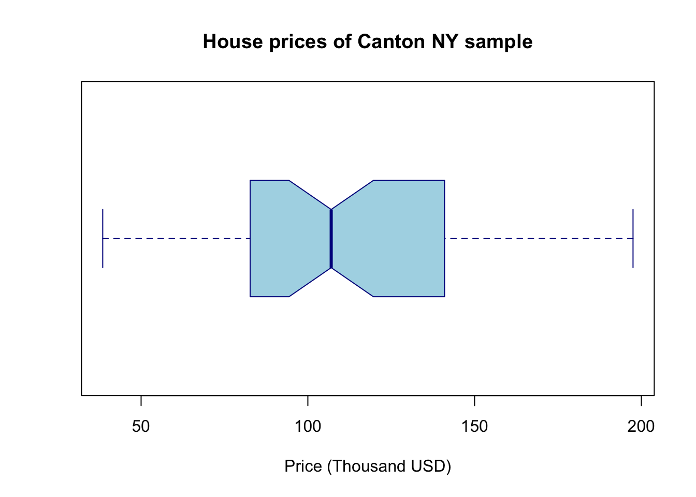
There are specific plotting packages, the most famous being ggplot2 (there are data camp courses on it). The absolute basics. Here x is blank because we just want to look at the price column alone.
library(ggplot2)
ggplot(HousesNY, aes(x ="", y = Price)) + ## this loads the data
geom_boxplot() ## and we choose a boxplot
Note for now, think of the %>% symbol and + symbol also as “one command on multiple lines..”. They allow you to build up layers of the plot. Data camp has more on this.
But with these we can easily do more sophisticated things. For example, here’s how to see the underlying data, which allows us to see something of the background distribution
https://r-charts.com/distribution/box-plot-jitter-ggplot2/
# Basic box plot
ggplot(HousesNY, aes(x = "", y = Price)) +
geom_boxplot() +
geom_jitter()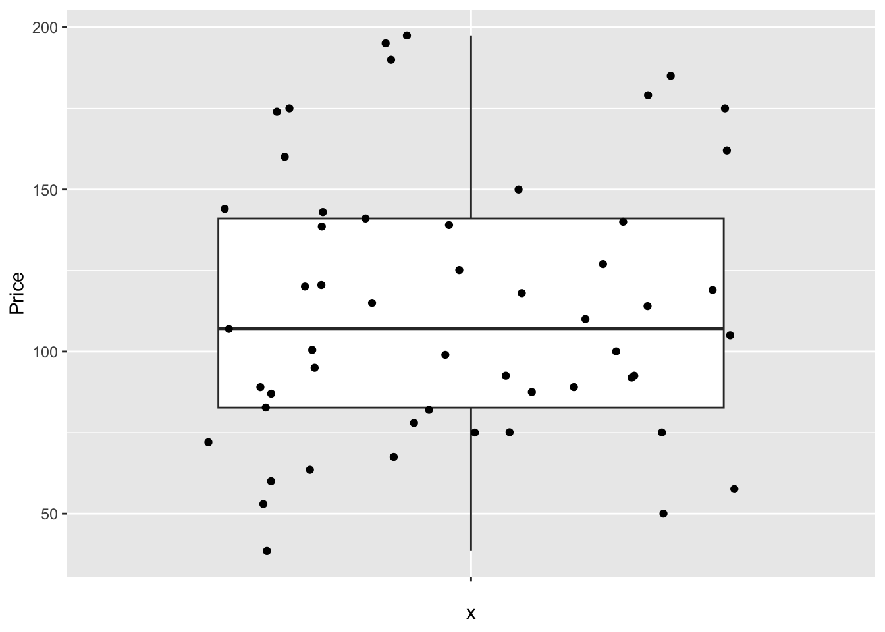
The basic code to see a boxplot split by group, in this case the price per number of beds:
boxplot(HousesNY$Price ~ HousesNY$Beds)
The advantage of this is that you can be sure that you really did plot your columns of choice (e.g. you didn’t mistakenly label anything). Note, if you use a comma, rather than the “~” symbol, you will make one for each column - which is normally not useful!
boxplot(HousesNY$Price, HousesNY$Beds)
In GGplot comparing different groups:
# Libraries
library(tidyverse)
library(hrbrthemes)NOTE: Either Arial Narrow or Roboto Condensed fonts are required to use these themes. Please use hrbrthemes::import_roboto_condensed() to install Roboto Condensed and if Arial Narrow is not on your system, please see https://bit.ly/arialnarrowlibrary(viridis)Loading required package: viridisLite# tell R that the beds column is categorical
HousesNY$Beds <- factor(HousesNY$Beds,
levels=c(min(HousesNY$Beds):max(HousesNY$Beds)))
# Plot
ggplot(HousesNY, aes(x=Beds, y=Price)) +
geom_boxplot() 
Or getting more complex
# Libraries
library(tidyverse)
library(hrbrthemes)
library(viridis)
# tell R that the beds column is categorical
# I already did this in the table section
#HousesNY$Beds <- as.factor(HousesNY$Beds)
# Plot
HousesNY %>%
ggplot( aes(x=Beds, y=Price, fill=Beds) )+
geom_boxplot() +
scale_fill_viridis(discrete = TRUE, alpha=0.6) +
geom_jitter(color="black", size=0.5, alpha=0.8) +
ggtitle("") +
xlab("Beds")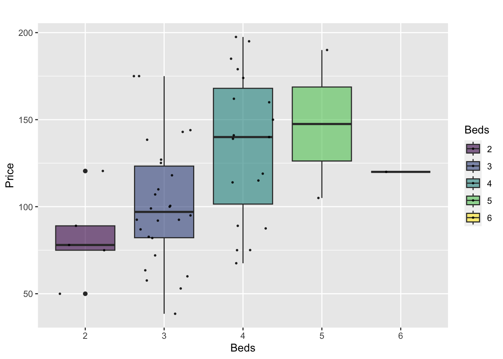
or dotplots..
ggplot(HousesNY, aes(x=Beds, y=Price, fill=Beds)) +
geom_boxplot() +
geom_dotplot(binaxis = "y", stackdir = "center", dotsize = 0.5,binwidth=7)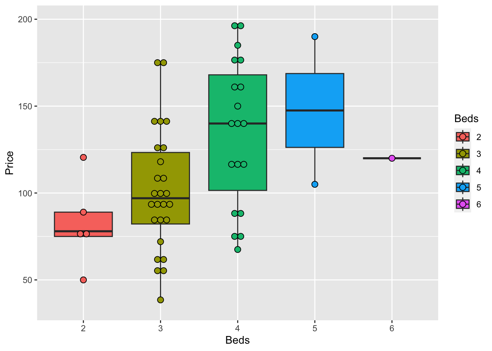
There are MANY more options, plus code here: https://www.r-graph-gallery.com/boxplot.html
and a delightful tutorial here: https://www.r-bloggers.com/2021/11/how-to-make-stunning-boxplots-in-r-a-complete-guide-with-ggplot2/
Finally, we can get super fancy in base R - it’s often a good way to learn how to code. I like this example because it shows many different aspects/useful commands in R programming. http://www.opiniomics.org/beautiful-boxplots-in-base-r/
library(RColorBrewer)
# create colours and colour matrix (for points)
m <- as.matrix(HousesNY$Price)
col_main <- colorRampPalette(brewer.pal(12, "Set3"), alpha=TRUE)(ncol(m))
col_transp <- colorspace::adjust_transparency(col_main, alpha = .3)
colsm <-matrix(rep(col_main, each=nrow(m)), ncol=ncol(m))
colsm_tr <-matrix(rep(col_transp, each=nrow(m)), ncol=ncol(m))
# create some random data for jitter
r <- (matrix(runif(nrow(m)*ncol(m)), nrow=nrow(m), ncol=ncol(m)) / 2) - 0.25
# get the greys (stolen from https://github.com/zonination/perceptions/blob/master/percept.R)
palette <- brewer.pal("Greys", n=9)
color.background = palette[2]
color.grid.major = palette[5]
# set graphical area
par(bty="n", bg=palette[2], mar=c(5,8,3,1))
# plot initial boxplot
boxplot(m~col(m), horizontal=TRUE, outline=FALSE, lty=1,
staplewex=0, boxwex=0.8, boxlwd=1, medlwd=1,
col=colsm_tr, xaxt="n", yaxt="n",xlab="",ylab="")
# plot gridlines
for (i in pretty(m,10)) {
lines(c(i,i), c(0,20), col=palette[4])
}
# plot points
points(m, col(m)+r, col=colsm, pch=16)
# overlay boxplot
boxplot(m~col(m), horizontal=TRUE, outline=FALSE, lty=1,
staplewex=0, boxwex=0.8, boxlwd=1, medlwd=1, col=colsm_tr,
add=TRUE, xaxt="n", yaxt="n")
# add axes and title
axis(side=1, at=pretty(m,10), col.axis=palette[7],
cex.axis=0.8, lty=0, tick=NA, line=-1)
axis(side=1, at=50, labels="Price (Thousand USD)",
lty=0, tick=NA, col.axis=palette[7])
axis(side=2, at=1, col.axis=palette[7], cex.axis=0.8,
lty=0, tick=NA, labels="Sample 1", las=2)
axis(side=2, at=17/2, labels="Phrase", col.axis=palette[7],
lty=0, tick=NA, las=3, line=6)
title("House Prices in Canton NY")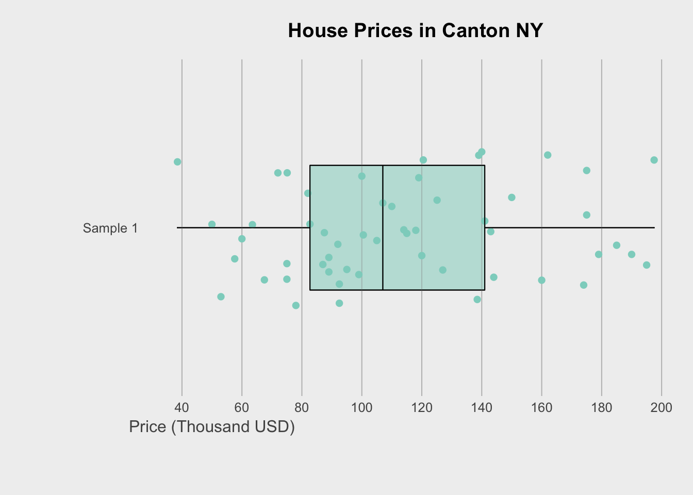
Or if you wish to do the rainbow many group boxplot at the beginning, the code is here : https://github.com/fawda123/diss_proc/blob/master/diss_plot.R
Violin plots combine the simplicity of a boxplot with a sense of the underlying distribution. This is useful when you want a sense of both the symmetry of the data and the underlying distribution. Highly recommended! For a single variable, consider a box-plot-with-histogram (see below).
There are MANY on R graph gallery with code you can copy/edit: https://www.r-graph-gallery.com/violin.html
For example, for our data:
# fill=name allow to automatically dedicate a color for each group
ggplot(HousesNY, aes(x=Beds, y=Price, fill=Beds)) +
geom_violin()Warning: Groups with fewer than two data points have been dropped.
There’s also a beautiful package called ggstatsplot which allows a lot of detail (https://indrajeetpatil.github.io/ggstatsplot/)
For example, I love the plot below because it shows how much data in each group.
# you might need to first install this.
library(ggstatsplot)You can cite this package as:
Patil, I. (2021). Visualizations with statistical details: The 'ggstatsplot' approach.
Journal of Open Source Software, 6(61), 3167, doi:10.21105/joss.03167# i'm changing the middle mean point to be dark blue
ggbetweenstats(data = HousesNY,x = Beds,y = Price,
centrality.point.args=list(color = "darkblue"))Warning: Groups with fewer than two data points have been dropped.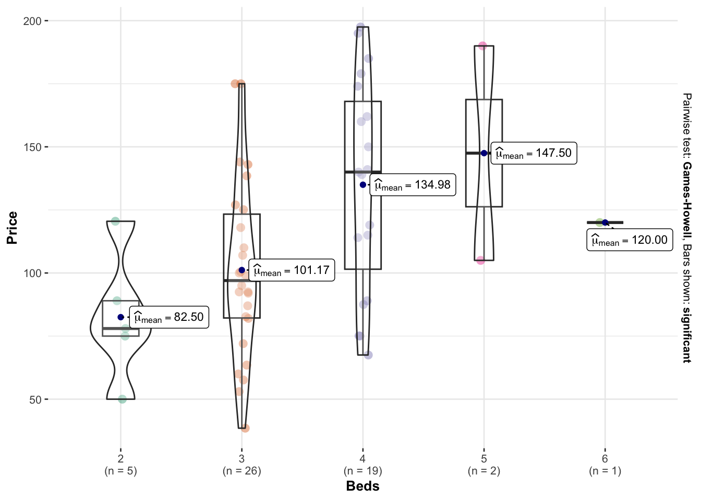
Or we can customise it even more using this tutorial to get results like this (https://www.r-graph-gallery.com/web-violinplot-with-ggstatsplot.html)
Especially just looking at a single response variable, it’s useful to look immediately at the distribution itself. Histograms are great for this, although you must be careful that the bin size doesn’t impact your perception of results. Adding in a boxplot is often useful
Here is the absolute basic histogram
hist(HousesNY$Price)
Or changing the bin size
hist(HousesNY$Price,br=40)
In GGPlot 2, it’s also easy
ggplot(data=HousesNY, aes(x=Price)) +
geom_histogram(bins=20) 
Often, a boxplot AND a histogram is useful as it allows you to see a sense of the data shape and its underlying symmetry. For example, in base R
# Layout to split the screen
graphics::layout(matrix(c(1,2),2,1, byrow=TRUE),
height = c(2,7))
# Draw the boxplot and the histogram
par(mar=c(0, 3.1, .5, 2.1))
data_to_plot <- HousesNY$Price
rangeplot <- pretty(data_to_plot,10)
boxplot(data_to_plot,col = "light blue",
border = "dark blue",xaxt="n",frame=FALSE,xlim=c(0.75,1.25),
horizontal = TRUE,notch = TRUE,ylim=c(min(rangeplot),max(rangeplot)))
par(mar=c(3, 3.1, .5, 2.1))
hist(data_to_plot , breaks=20 ,
col=grey(0.3) , border=F ,
tcl=-.25,mgp=c(1.75,.5,0),
main="" , xlab="Price of houses in Canton NY",
xlim=c(min(rangeplot),max(rangeplot)))
box();grid();
hist(data_to_plot , breaks=20 , add=TRUE,
col=grey(0.3) , border=F , axis=FALSE,
xlim=c(min(rangeplot),max(rangeplot)))
And the same with ggplot2:
library(ggExtra)
p <- ggplot(data=HousesNY, aes(x=Price)) +
geom_point(aes(y = 0.01), alpha = 0) +
geom_histogram(bins=20) +
geom_density(na.rm=T)
ggMarginal(p, type="boxplot", margins = "x")Warning: Continuous x aesthetic
ℹ did you forget `aes(group = ...)`?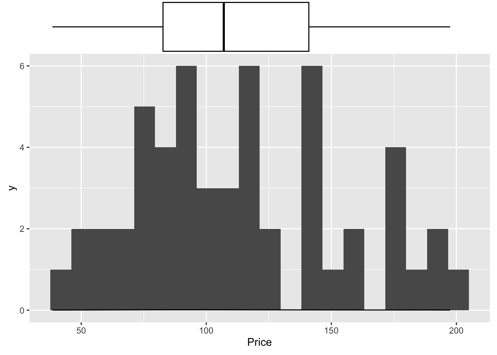
I also love the ggstatplot version
library(ggstatsplot)
## plot
gghistostats(
data = HousesNY, ## dataframe from which variable is to be taken
x = Price, ## numeric variable whose distribution is of interest
title = "Price of sampled houses in Canton NY", ## title for the plot
caption = "Source: Zillow",
type = "parametric",
xlab = NULL,subtitle=FALSE,
ggthemes::theme_tufte(),
binwidth = 8) ## binwidth value (experiment)Warning: The dot-dot notation (`..count..`) was deprecated in ggplot2 3.4.0.
ℹ Please use `after_stat(count)` instead.
ℹ The deprecated feature was likely used in the ggstatsplot package.
Please report the issue at
<]8;;https://github.com/IndrajeetPatil/ggstatsplot/issueshttps://github.com/IndrajeetPatil/ggstatsplot/issues]8;;>.
Or their version that includes a lot of associated statistics. You can turn many of these on and off
library(ggstatsplot)
## plot
gghistostats(
data = HousesNY, ## dataframe from which variable is to be taken
x = Price, ## numeric variable whose distribution is of interest
title = "Price of sampled houses in Canton NY", ## title for the plot
caption = "Source: Zillow",
type = "parametric",
xlab = NULL,
ggthemes::theme_tufte(),
binwidth = 8) ## binwidth value (experiment)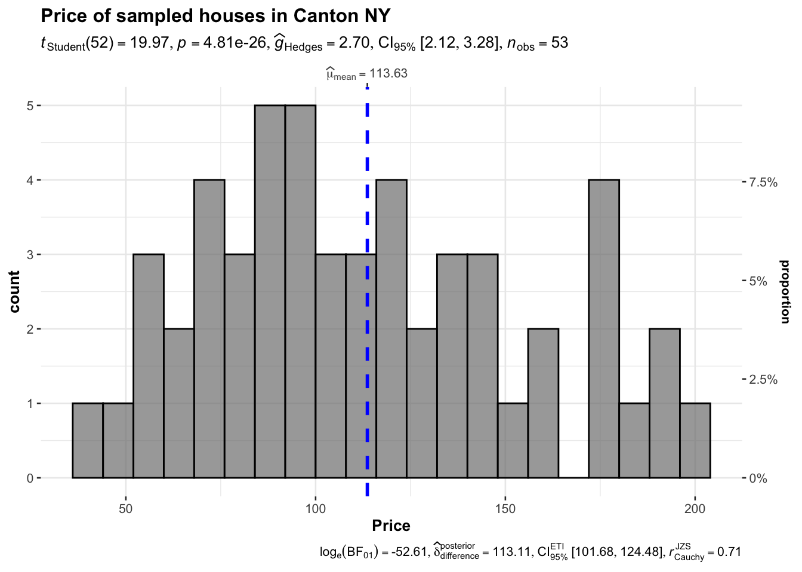
Sometimes seeing a smoothed line helps draw the eye to distributions
hist(HousesNY$Price, prob = TRUE,
main = "Canton Prices with density curve")
lines(density(HousesNY$Price), col = 4, lwd = 2)
box()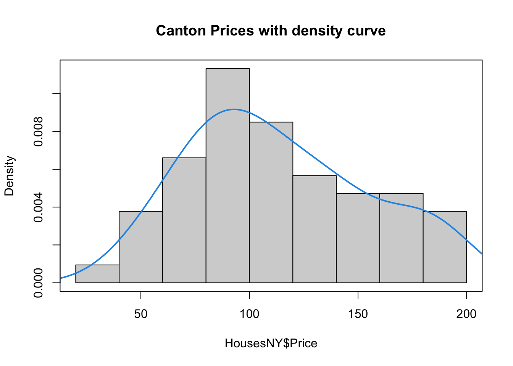
Let’s say you want to make plots similar to the ones in the lectures where there is your chosen distribution on top.
If you know the distribution, you can simply add it on top as a line
mysample <- HousesNY$Price
plotmin <- mean(mysample) - sd(mysample)*3
plotmax <- mean(mysample) + sd(mysample)*3
# Points for the normal equation line
NormCurve_x <- seq(plotmin,plotmax, length = 40)
# Normal curve calculation for each point
NormCurve_y <- dnorm(NormCurve_x, mean = mean(mysample), sd = sd(mysample))
# make sure this is density not raw frequency
hist(mysample , breaks=20 , freq=FALSE,
col=grey(0.5) , border=F ,
xlim=c(plotmin,plotmax),
tcl=-.25,mgp=c(1.75,.5,0),
main="" , xlab="Price of houses in Canton NY")
# add the normal curve (THIS NEEDS TO BE IN THE SAME CODE CHUNK)
lines(NormCurve_x, NormCurve_y, col = 2, lwd = 2)
box()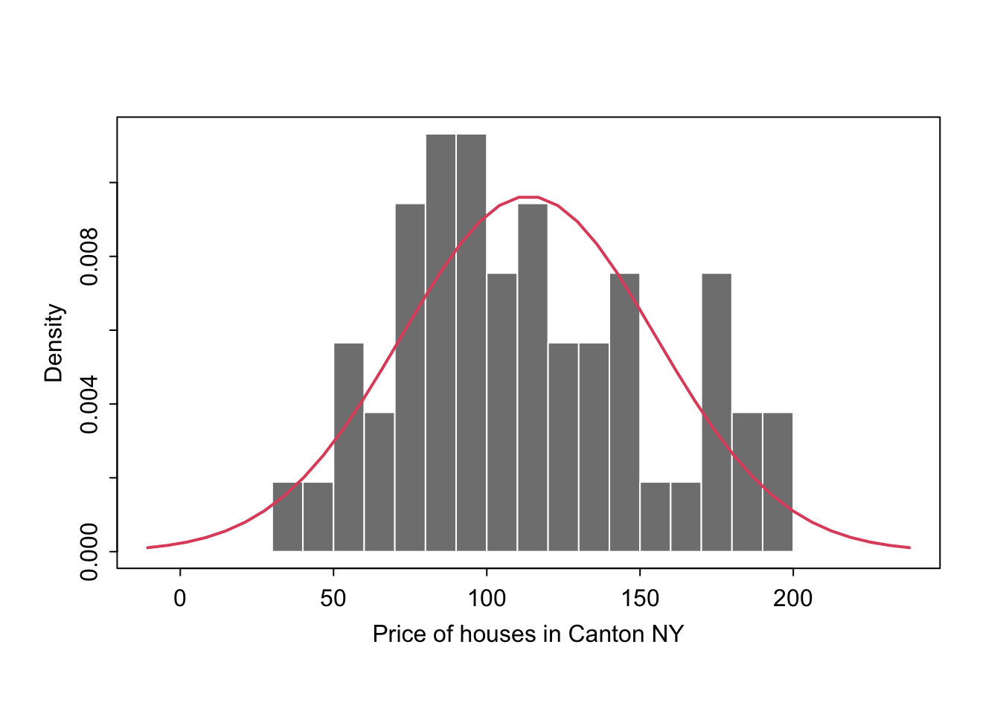
We could plot any old curve this way, it doesn’t have to be “fit” to our data. For example here is a random gamma function
mysample <- HousesNY$Price
# Points for the normal equation line
GammaCurve_x <- seq(plotmin,plotmax, length = 60)
GammaCurve_y <- dgamma(GammaCurve_x,shape = 2)
# make sure this is density not raw frequency
hist(mysample , breaks=20 , freq=FALSE,
col=grey(0.5) , border=F ,
xlim=c(plotmin,plotmax),
tcl=-.25,mgp=c(1.75,.5,0),
main="" , xlab="Price of houses in Canton NY")
# add the normal curve (THIS NEEDS TO BE IN THE SAME CODE CHUNK)
lines(GammaCurve_x, GammaCurve_y, col = 2, lwd = 2)
box()
Or you can easily compare two datasets, tutorial for this plot here: https://www.r-graph-gallery.com/histogram_several_group.html
These are another way of looking at histograms for different groups. They work especially when your grouping data is ORDINAL (has some inherent order). So bedrooms would be a good example
Two great pages here:
We can use histograms or smoothed density lines https://www.data-to-viz.com/graph/ridgeline.html
library(ggridges)
library(ggplot2)
HousesNY %>%
ggplot( aes(y=Beds, x=Price, fill=Beds)) +
geom_density_ridges(alpha=0.6, stat="binline") +
scale_fill_viridis(discrete=TRUE) +
scale_color_viridis(discrete=TRUE) +
theme_ipsum() +
theme(
legend.position="none",
panel.spacing = unit(0.1, "lines"),
strip.text.x = element_text(size = 8)
) +
xlab("") +
ylab("Number of Bedrooms")`stat_binline()` using `bins = 30`. Pick better value with `binwidth`.
All of these are from https://r-charts.com/distribution/ggridges/
library(ggridges)
library(ggplot2)
ggplot(HousesNY, aes(x = Price, y = Beds, fill = stat(x))) +
geom_density_ridges_gradient() +
scale_fill_viridis_c(name = "Depth", option = "C") +
coord_cartesian(clip = "off") + # To avoid cut off
theme_minimal()Warning: `stat(x)` was deprecated in ggplot2 3.4.0.
ℹ Please use `after_stat(x)` instead.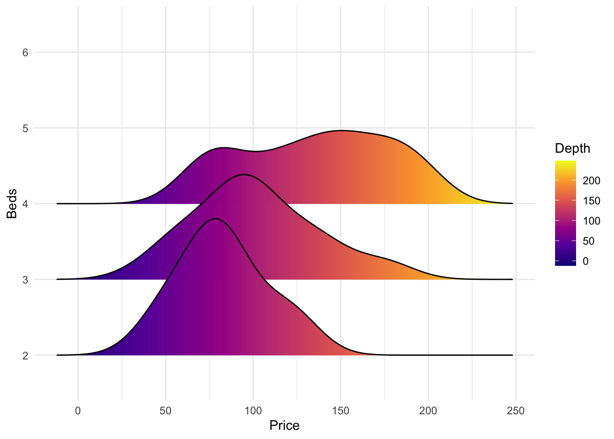
We can also make the colours more meaningful, for example adding quantiles to show the median and interquartile range
ggplot(HousesNY, aes(x = Price, y = Beds, fill = stat(quantile))) +
stat_density_ridges(quantile_lines = FALSE,
calc_ecdf = TRUE,
geom = "density_ridges_gradient") +
scale_fill_brewer(name = "")Picking joint bandwidth of 16.8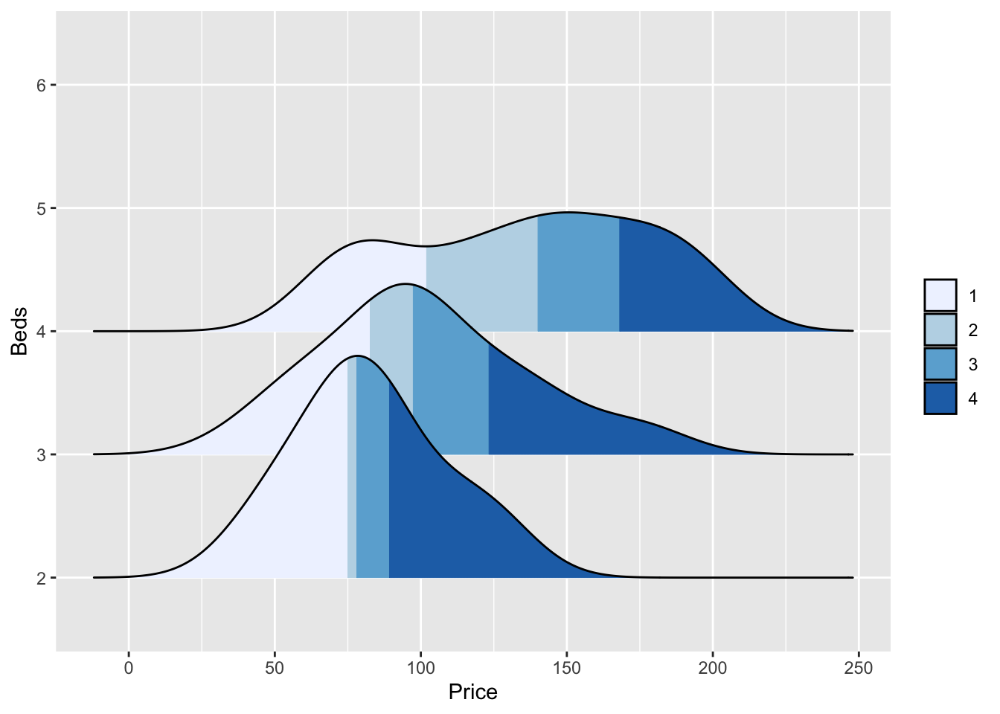
or highlighting tails
ggplot(HousesNY, aes(x = Price, y = Beds, fill = stat(quantile))) +
stat_density_ridges(quantile_lines = TRUE,
calc_ecdf = TRUE,
geom = "density_ridges_gradient",
quantiles = c(0.05, 0.95)) +
scale_fill_manual(name = "Proportion",
values = c("#E2FFF2", "white", "#B0E0E6"),
labels = c("(0, 5%]", "(5%, 95%]", "(95%, 1]"))Picking joint bandwidth of 16.8Warning: Using the `size` aesthietic with geom_segment was deprecated in ggplot2 3.4.0.
ℹ Please use the `linewidth` aesthetic instead.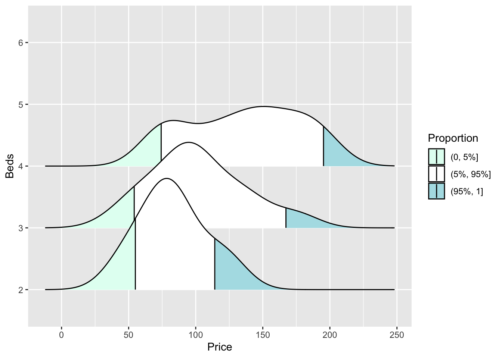
These are cool. As described here:
“But what is a beeswarm plot? … A beeswarm plot improves upon the random jittering approach to move data points the minimum distance away from one another to avoid overlays. The result is a plot where you can see each distinct data point, like so: It looks a bit like a friendly swarm of bees buzzing about their hive.”
It’s often used for professional visualisation, see here for many examples: https://flowingdata.com/charttype/beeswarm
Especially for the first, you can see the distribution clearly, also with the amount of data. With the second, you can see the mitigating impact of a second variable.
To make easy ones you can install a new packages “beeswarm”
library("beeswarm")
beeswarm(HousesNY$Price,
vertical = FALSE, method = "hex")
This is a little boring for my 58 data points! (although perhaps it does show that 58 points is barely a big enough sample to know an underlying model..)
Here is the absolute basic scatterplot
# you can either do plot(x, y)
# OR (recommended), use the ~ to say plot(y~x)
# e.g. y depends on x
HousesNY$Beds <- as.numeric(HousesNY$Beds)
plot(HousesNY$Price ~ HousesNY$Beds)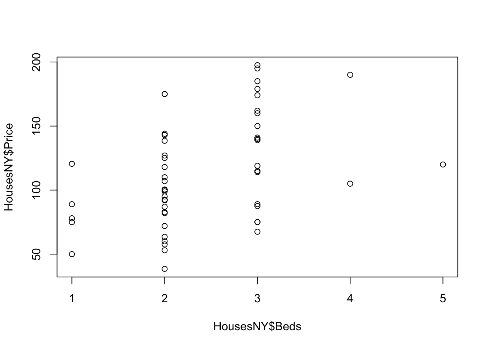
There are many things we can change, see the help file for the par command for more.
For example, here is an ugly plot showing as many as I can think!
plot(HousesNY$Price ~ HousesNY$Beds,
xlim=c(0,7), #xlimits
ylim=c(40,220), #ylimits
xlab=list("Beds",cex=.8,col="red",font=2), # play with x-label
ylab=list("Price",cex=1.2,col="blue",font=3), # play with x-label
main="Ugly feature plot",
cex=1.2, #point size
pch=16, # symbol shape (try plot(1:24,1:24,pch=1:24 to see them all))
tcl=-.25, # smaller tick marks
mgp=c(1.75,.5,0)) # move the x/y labels around
grid() # add a grid
# lines means "add points on top"
lines(HousesNY$Price ~ HousesNY$Beds,
type="p", # p for points, "l" for lines, "o" for both, "h for bars
xlim=c(0,7), #xlimits
ylim=c(40,220), #ylimits
col="yellow",
cex=.5, #point size
pch=4) # move the x/y labels around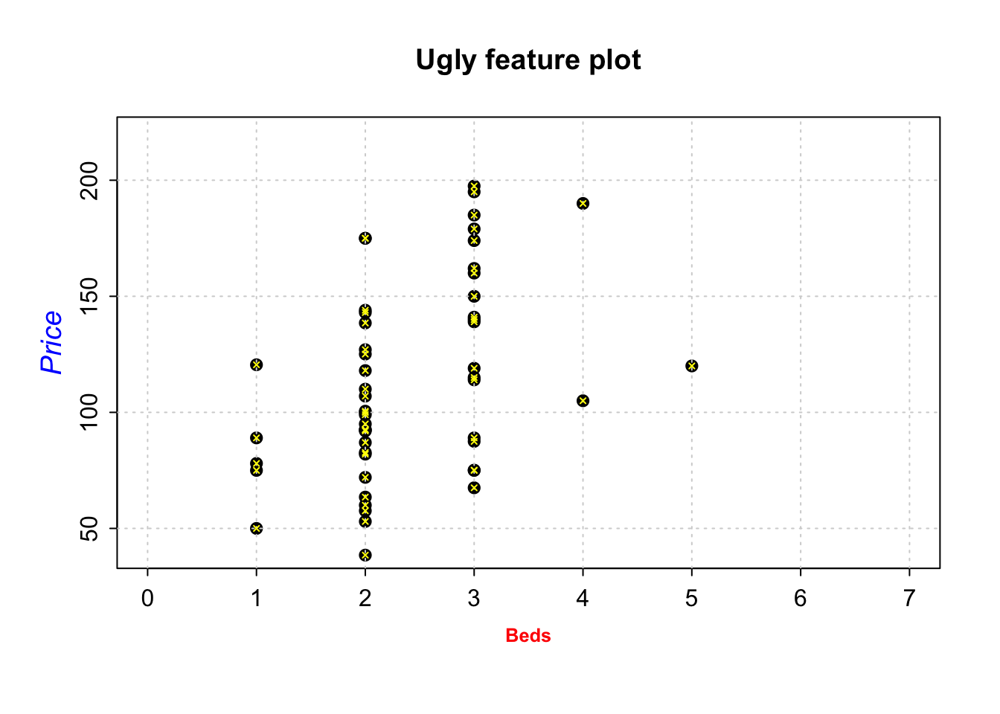
To add a line, you can use the abline command IN THE SAME CODE CHUNK. For example
plot(HousesNY$Price ~ HousesNY$Beds,
xlim=c(0,7), #xlimits
ylim=c(40,220), #ylimits
xlab=list("Beds",cex=.8,col="red",font=2), # play with x-label
ylab=list("Price",cex=1.2,col="blue",font=3), # play with x-label
main="", # no title
cex=1.2, #point size
pch=16, # symbol shape (try plot(1:24,1:24,pch=1:24 to see them all))
tcl=-.25, # smaller tick marks
mgp=c(1.75,.5,0)) # move the x/y labels around
# add vertical line at 3.5
abline(v=5.5,col="red")
# add horizontal line at the mean of price
abline(h=mean(HousesNY$Price))
# add line of best fit
abline(lm(HousesNY$Price ~ HousesNY$Beds),col="blue",lty="dotted",lwd=3) 
GGPlot also has basic and advanced options. From the basics:
library(ggplot2)
#
ggplot(HousesNY, aes(x=Beds, y=Price)) +
geom_point()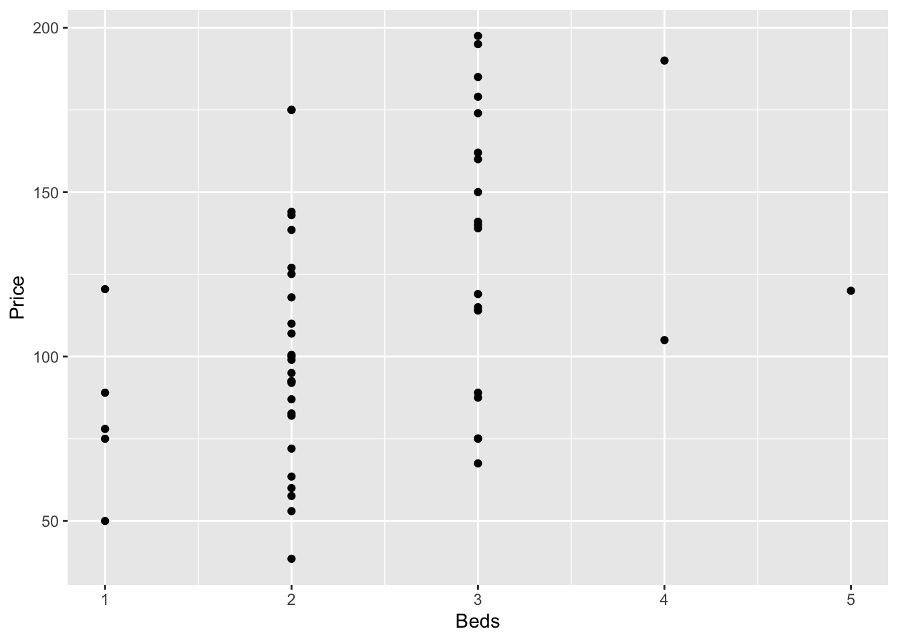
To more advanced:
library(ggplot2)
library(hrbrthemes)
# use options!
ggplot(HousesNY, aes(x=Beds, y=Price)) +
geom_point(
color="black",
fill="#69b3a2",
shape=22,
alpha=0.5,
size=6,
stroke = 1
) +
theme_ipsum()
Adding a line of best fit is also easy, but fits less easily with R’s modelling commands:
# Library
library(ggplot2)
library(hrbrthemes)
# Create dummy data
data <- data.frame(
cond = rep(c("condition_1", "condition_2"), each=10),
my_x = 1:100 + rnorm(100,sd=9),
my_y = 1:100 + rnorm(100,sd=16)
)
# Basic scatter plot.
p1 <- ggplot(data, aes(x=my_x, y=my_y)) +
geom_point( color="#69b3a2") +
theme_ipsum()
# with linear trend
p2 <- ggplot(data, aes(x=my_x, y=my_y)) +
geom_point() +
geom_smooth(method=lm , color="red", se=FALSE) +
theme_ipsum()
# linear trend + confidence interval
p3 <- ggplot(data, aes(x=my_x, y=my_y)) +
geom_point() +
geom_smooth(method=lm , color="red", fill="#69b3a2", se=TRUE) +
theme_ipsum()
p1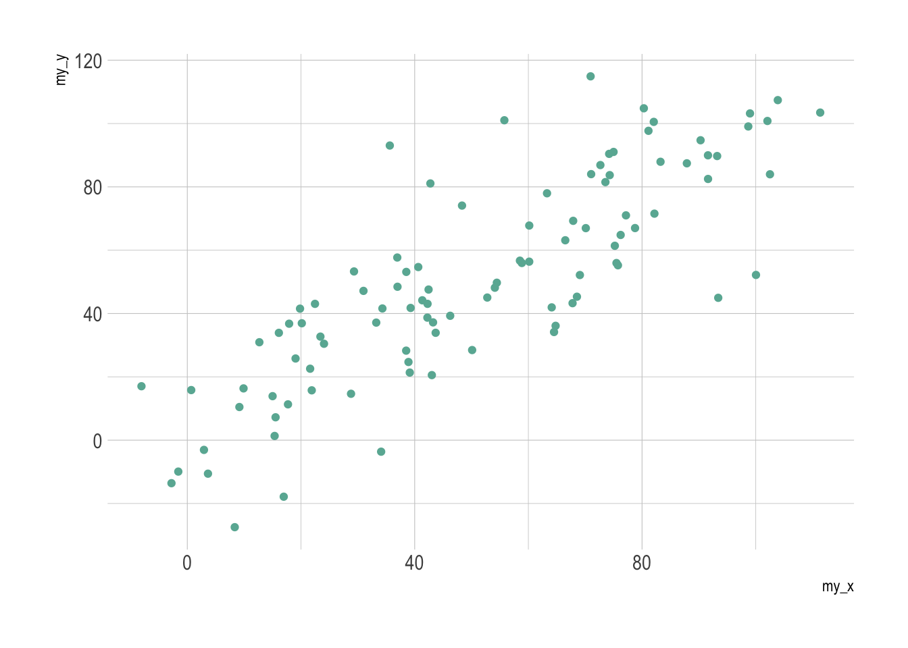
p2`geom_smooth()` using formula = 'y ~ x'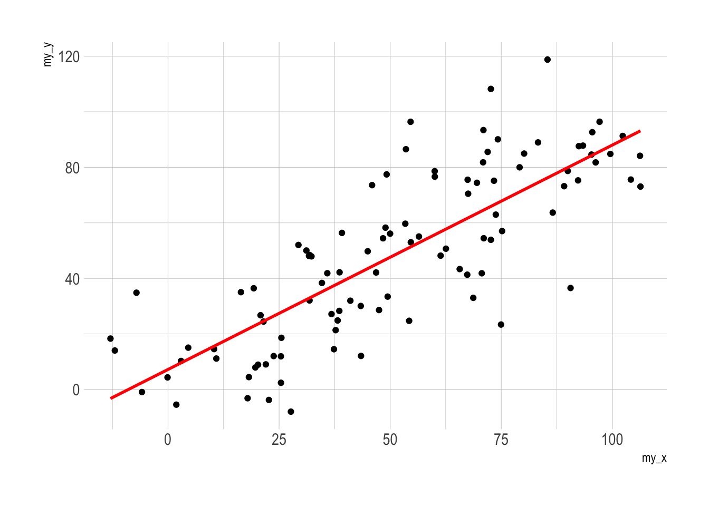
p3`geom_smooth()` using formula = 'y ~ x'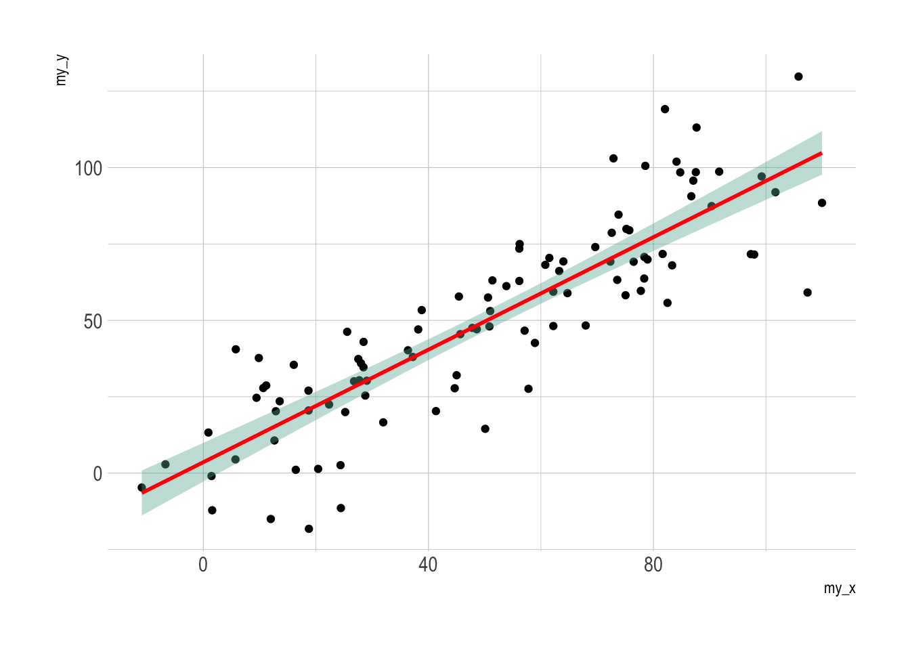
Or using the plotly library to make your plots interactive (really useful, try zooming in or clicking on a few points)
# create the plot, save it as "p" rather than print immediately
myplot <- ggplot(HousesNY, aes(x=Beds, y=Price, label=Baths)) +
geom_point(alpha=.5) +
theme_classic()
# and plot interactively
ggplotly(myplot)It’s also very easy to add in color to see another variable. For example
# create the plot, save it as "p" rather than print immediately
myplot <- ggplot(HousesNY, aes(x=Beds, y=Price,color=Baths)) +
geom_point(alpha=.5) +
theme_classic()+
scale_color_gradient(low="blue", high="red")
# and plot interactively
ggplotly(myplot)Many more interactive options in this tutorial: https://plotly.com/r/line-and-scatter/